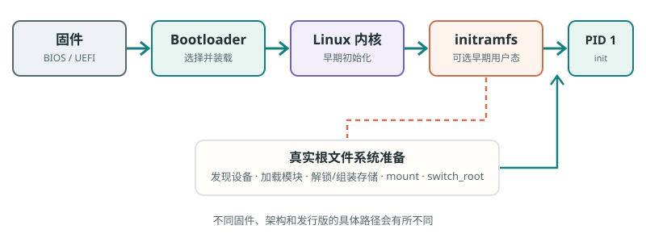

开机并不是“BIOS 把 Linux 直接读进内存”这么简单。固件先完成平台初始化并选择启动项；启动管理器或引导加载器再把内核镜像、initramfs 和启动参数交给内核；内核完成早期初始化后，才启动第一个用户态进程。不同机器、固件模式和发行版的细节并不完全相同。

一、从按下电源键到内核启动
| 阶段 | 主要职责 | 交接给谁 |
|---|---|---|
| CPU 复位与固件 | 执行平台固件代码、初始化必要硬件、建立启动环境 | 固件启动管理器 |
| 启动管理器 / Bootloader | 选择启动项，加载内核镜像和可选 initramfs，传递命令行与硬件信息 | 内核入口 |
| 内核早期初始化 | 建立架构相关执行环境，初始化内存管理、中断和核心子系统 | 内核初始化流程 |
| initramfs（若使用） | 加载必要模块、发现根设备、解锁/组装存储并挂载真实根文件系统 | 真实根文件系统中的 init |
| 用户空间 PID 1 | 启动和管理系统服务、登录环境及其他用户进程 | 完整用户空间 |
在 x86 Linux 上，内核定义了与引导加载器之间的 Linux/x86 Boot Protocol。这份协议描述了引导加载器如何提供启动参数、内存信息和镜像装载状态。它不是所有 CPU 架构通用的启动流程规范；ARM、RISC-V 和 EFI stub 等路径各有不同约定。
二、BIOS vs UEFI
Legacy BIOS 和 UEFI 是不同的固件接口模型。传统 PC BIOS 启动常从 MBR 引导代码开始，再由后续阶段加载更大的 Bootloader；UEFI 则提供启动变量、设备路径、文件系统和 EFI image 装载服务。UEFI Boot Manager 可通过 LoadImage() 与 StartImage() 加载并执行 EFI 应用。
| 比较维度 | Legacy BIOS 常见路径 | UEFI 常见路径 |
|---|---|---|
| 启动接口 | 传统固件中断与引导扇区约定 | EFI Boot Services、协议与启动变量 |
| 常见启动组件 | MBR/引导扇区、后续 Bootloader 阶段 | EFI System Partition（ESP）中的 EFI 应用 |
| 分区方案 | 常与 MBR 分区表配合 | 常与 GPT 配合，但 UEFI 与 GPT 不是同一个概念 |
| 安全启动 | 没有与 UEFI Secure Boot 等价的标准化固件验证流程 | 可启用 Secure Boot，根据平台密钥数据库验证 EFI 镜像 |
不要把 UEFI 描述成“一个完整的小型操作系统”：它提供固件服务和协议，但功能集由平台实现决定。也不要说 UEFI 必然使用 GPT、Legacy BIOS 必然只能处理 2TB 磁盘，或所有 UEFI 都自带图形界面和网络栈；这些结论依赖分区工具、固件实现和平台配置。
Secure Boot 的边界
Secure Boot 是可配置的信任链机制，验证哪些 EFI 镜像可以启动，取决于固件密钥和平台策略。Linux 发行版可能通过 shim、GRUB、签名内核和内核模块签名构建后续信任链；不能笼统声称“固件自动验证从 Bootloader 到所有内核模块的每一步”。模块签名策略是内核的独立配置与加载策略。
参考 UEFI Boot Manager 和 UEFI Boot Services。
三、GRUB与systemd-boot
1. GRUB
GRUB 2 是通用引导加载器，可用于 BIOS 和 UEFI 平台。它能够根据构建时启用的模块读取受支持的文件系统、加载内核与 initramfs，并传递内核命令行。实际支持的文件系统、加密能力和启动方式取决于 GRUB 构建配置与平台，不应把所有发行版的 GRUB 功能视为完全相同。
2. systemd-boot
systemd-boot 是仅面向 UEFI 系统的简洁启动管理器。它从 ESP 和可选的 XBOOTLDR 分区读取启动项、内核、initrd 和 EFI 镜像。它与 GRUB 的定位不同：systemd-boot 依赖 UEFI 固件提供的文件访问能力，不是一个在所有文件系统上都能工作的通用引导环境。
不能在没有同一硬件、固件、配置和启动项的测量时，断言 systemd-boot 总是比 GRUB 快或更可靠。选择时考虑固件模式、磁盘布局、加密、文件系统、启动项管理和恢复方式。
# 查看当前内核收到的启动参数
cat /proc/cmdline
# 在 Linux 中检查是否以 UEFI 模式启动
test -d /sys/firmware/efi && echo UEFI || echo "Legacy/非 UEFI"四、initramfs与rootfs切换
内核可能需要先加载存储控制器、文件系统、加密或 RAID 相关模块，才能访问真实根文件系统。initramfs 提供一个早期用户空间来完成这些工作。Linux 内核文档说明，initramfs 通常是 cpio 归档，解包到 rootfs；如果其中存在 /init，内核会执行它作为早期用户空间入口。
启动过程
- Bootloader 把内核镜像和可选的外部 initramfs 载入内存，并传递启动参数。
- 内核解包 initramfs 到 rootfs；rootfs 是内核始终存在的特殊根文件系统实例，默认实现可使用 ramfs，启用 tmpfs 时也可使用 tmpfs。
- 若存在
/init，它在用户态运行，按发行版脚本加载驱动、发现块设备、解锁加密卷并挂载真实根文件系统。 - 早期用户空间通过
switch_root等工具切换到真实根，并执行真正的 init 程序；PID 1 通常通过 exec 延续，而不是由内核重新创建一个“第二个 PID 1”。
# Debian/Ubuntu 系统可用 initramfs-tools 查看归档内容
lsinitramfs /boot/initrd.img-$(uname -r) | head -40
# 查看当前根文件系统与启动参数
findmnt /
cat /proc/cmdlineinitramfs 并不是所有系统都必须使用的独立“临时 Linux”。有的内核把内置 cpio 归档链接进镜像，有的引导加载器传入外部 initrd/initramfs；早期用户空间的内容由发行版工具生成。
参考 Linux 内核：ramfs、rootfs 与 initramfs。
五、systemd启动编排
当内核启动第一个用户态进程后，许多现代 Linux 发行版会以 systemd 作为 PID 1。systemd 不只是启动脚本执行器，它还管理服务、挂载点、socket、timer、target 和其他 unit 的生命周期。
1. Unit 与依赖语义
Requires=、Wants= 等依赖关系会影响某个 unit 是否被拉入启动事务；After= 和 Before= 主要定义顺序，本身不会自动把另一个 unit 拉入事务。理解这一点可以避免把“排序关系”误读为“服务依赖”。
2. 网络就绪不是一个单一事件
network.target 是网络栈相关的同步点，不等同于“已经拿到 IP 并能访问互联网”。需要等待网络配置完成的服务，可能还要与 network-online.target 及对应的 wait-online 服务协作；是否应该等待，取决于服务真正需要的网络条件。
# 查看启动关键路径
systemd-analyze critical-chain
# 查看各 unit 的启动耗时参考
systemd-analyze blame
# 查看某个 unit 的依赖与排序信息
systemctl show ssh.service -p Requires -p Wants -p After -p Beforesystemd-analyze blame 的耗时不能简单相加成总启动时间；并行启动和等待依赖会影响关键路径。不要用没有环境和测量方法的“systemd 2–5 秒、SysV 15–30 秒”作为普遍结论。
参考 systemd 的 PID 1 说明和 systemd-boot 文档。
六、结语与下一章预告
开机过程是多个独立接口之间的交接：固件选择 EFI 应用或传统引导代码，Bootloader 依照架构协议装载内核，内核建立基础执行环境，initramfs（若使用）准备真实根文件系统，PID 1 再组织用户空间。理解每一步的输入、输出和失败边界，比背一条看似统一的启动时间线更重要。
下一章将进入 Linux 源码树，观察内核目录、构建系统和一个最小的可加载模块。
本章自测 · 从概念走向验证
给 BIOS/UEFI、引导器、内核、init 排出合理顺序。
查看思考提示
固件负责平台初始化，引导器选择内核，内核再建立用户空间。